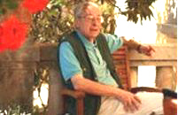

 “Din sămânța pe care primii, după cel de-al doilea război mondial, am sădit-o la Triest, prin înființarea Asociației purtând numele marelui patriot Andrei Glavina, vor putea veni roade, pe care toți le așteptăm, chiar în al douăsprezecelea ceas”. Sub aceste auspicii propunem un dialog cu Emil Petru Rațiu, un intelectual militant, medic-scriitor stabilit în Italia din 1969, despre situația istro-românilor la început de mileniu trei și cum poate fi dusă mai departe cauza și limba lor, pentru a o salva de la pierire.
De numele lui Emil Petru Rațiu se leagă o susținută și constantă activitate în slujba istro-românilor: a fondat – în 29 aprilie 1994, la Triest – Asociația culturală istro-română “Andrei Glavina” și revista Scrisore către fraț rumeri (Scrisoare către frații români) prin care acest dialect să-și continue existența, a publicat numeroase articole despre istro-români în presa din Italia, Elveția și România, a participat la congrese internaționale și a susținut cauza istro-română la Consiliul Europei.
Domnule Rațiu, de unde vine interesul dumneavoastră pentru istro-români și graiul lor?
Din faptul că sunt cei mai amenințați cu pieirea limbii și, deci, a identității, în scurt timp, și nu există nici o inițiativă pentru a-i apăra din partea statului român. Cum alte popoare, ca portughezii, spaniolii etc., se mândresc cu descoperirile geografice făcute de înaintașii lor, avem și noi o epocă în istorie, o Lusiadă vie, nescrisă, a noastră, aproape necunoscută de marele public, în care strămoșii noștri erau năieri, navigatori ai uscatului, cum îi numește Constantin Noica, extinzându-se, în mod pașnic, în baza marii forțe demografice a poporului român de atunci, când mai compact, când mai răzleț, din regatul sârb al lui Ștefan Dușan și Tesalia și Macedonia, la sud, până în Moravia, la nord, și din stepele Ucrainei până în Istria, de la est la vest. O dovadă vie a acelei epoci sunt până în ziua de azi istro-românii, într-o regiune situată pe meridianele geografice la apus de Viena, într-o zonă importantă a Europei, unde se întâlnesc națiunile latine cu cele slave și germane.
Apoi, în ce privește înființarea Asociației culturale istro-române “Andrei Glavina”, vreau să spun că această asociație nu aș fi putut să o înființez de unul singur, fără sprijinul celor din Triest, unde mergeam des – pentru a trece apoi peste graniță la istro-români – în special fără sprijinul lui Ervino Curtis, pe atunci director al Serviciului de relații Externe al portului din Triest, care a pus la dispoziție sala festivă a portului maritim pentru întrunirile asociației noastre istro-române, ceea ce a dat vizibilitate acțiunii noastre, bucurându-ne de atenția, mai mult decât m-aș fi așteptat, a mass-mediei din Triest și chiar din vecina Croație – Rosi Gasperini, ziaristă de la Voce del Popolo, și Ezio Mestrovich, care atât de frumos a scris despre istro-români.
Cum ați învățat istro-româna?
Am învățat-o așa cum se învață orice limbă sau dialect pe care nu-l cunoști, din cărți – lipsind, însă, cărți didactice în acest scop și, mai cu seamă, un dicționar adevărat – dar citind texte istro-române, de la cartea Itinerar în Istria a marelui patriot Ioan Maiorescu, de la 1857, ulterior tradusă și în limba italiană, de doamna Elena Pantazescu, soția lui Ervin Curtis, până la cele mai recente texte istro-române, acelea ale Profesorului Richard Sârbu de la Timișoara, folosind gramatica Profesorului August Kovačec de la Zagreb și îmbogățindu-mi cunoștințele pe teren, în convorbirile cu oamenii din satele istro-române, unde am ajuns prima oară în 1990, împreună cu Profesorul Carol Lavacek din Praga, pe care l-am cunoscut la congresele aromânilor în Germania, în anii 1980. Dacă ați citit romanul meu Bariera, apărut în 1994, ați văzut că acolo este un capitol final în care este vorba de aromâni, de războiul civil din Grecia, din anii 1945-1948.
Cum ați ajuns să scrieți o revistă în istro-română și să fondați o organizație pentru ei?
Pentru faptul, așa cum deja v-am spus, că ei sunt cei mai amenințați cu pieirea limbii și a identității etnice și erau primii care trebuiau ajutați. Revista am început să o scriu după înființarea Asociației istro-române și scoaterea fiecărui număr a fost o muncă istovitoare, neexistând, așa cum am menționat, un dicționar adevărat al dialectului istro-român, nici o ortografie, mai cu seamă că istro-românii învață ortografia croată, în care unele semne grafice se citesc altfel decât la noi, și punându-se, pentru redarea noțiunilor vieții moderne de azi, și problema neologismelor, pe care ei, neavându-le, le-au luat din limba croată care are cu totul alt mod de formare a neologismelor decât limbile latine, deci necorespunzând cu nimic ca sunet cu neologismele din limbile neolatine. Stăteam, câteodată, ore întregi la un singur cuvânt, ca să cumpănesc, de exemplu, cazul gramatical la care să pun un substantiv, sau dacă trebuia să-l scriu articulat sau nearticulat, căci nu totdeauna corespunde cu limba pe care o vorbim noi în România, adică cu dialectul literar daco-român.
Apoi, scrisă de mine revista, începea calvarul – cred că pot folosi acest termen – al transcrierii ei la calculator, căci eu nu știam încă să folosesc calculatorul și trebuia să mă pun de acord cu doamna de la tipografia “Silgraf” de la Roma, Daniela D’Agostino, pentru orele – multele ore – în care să-mi stea la dispoziție, eu trebuind să-i dictez aproape literă cu literă, iar dânsa trebuind să facă adevărate tururi de forță, pentru a găsi – mai bine zis a inventa – pe tastiera italiană a calculatorului, semnele diacritice românești... Nu mai spun că timpul meu liber era extrem de redus, având un program de muncă foarte încărcat pentru profesia mea de doctor, în policlinici împrăștiate și în afara Romei. La tipografia unde tipăream revistele istro-române se dusese vestea că erau scrise în limba ucraineană, oricât încercam eu să le explic că era un dialect al limbii române, deci neolatin... Apoi trebuia să expediez zeci, sute de plicuri mari conținând revista, care apărea în condiții grafice deosebite, nemaipunând în cont cheltuielile pe care le-am susținut mereu de unul singur, căci altcineva nu era nimeni, pentru editarea revistei, care se distribuia gratuit. Mii și mii de euro, dați cu entuziasm de unul singur, ca de altfel cei adăugați pentru deplasările la Congresele convocate de Consiliul Europei pe tema limbilor regionale sau minoritare, sau pentru drumurile la Triest, în Istria sau la Zagreb, sau chiar pentru premiile pe care le-am acordat, din banii mei, unor tineri istro-români, în cadrul unei festivități, pentru poezii scrise de ei. Spun aceste lucruri, deoarece astăzi citesc cu mirare, ici și colo, de “entuziaști” de la “Asociația Andrei Glavina” la Triest, care au scos revista Scrisore către fraț rumer, citându-se nume de bieți oameni care nu au nici o legătură cu revista, chiar dacă unii-s de origine istro-română, dar nu au, din păcate, habar de istro-română și de română, iar numele cui a scris revista nici nu este pomenit.
Ne puteți împărtăși câteva din amintirile despre istro-românii pe care i-ați cunoscut?
A rememora din traiectoria mea umană legată de istro-români este mult prea lung pentru a o putea cuprinde aici, dar mă voi limita la câteva cazuri: acela al prietenului meu Boris Doricich lu Ovciarich, originar din satul istro-român Jeiăn. Acest om scria poezii și povestiri în dialectul său natal și suferea profund din cauza perspectivei dispariției graiului său matern, găsindu-ne în această privință, amândoi, mai mult decât ceilalți, pe aceeași lungime de undă. I-am trimis spre publicare la revista MicRomania din Belgia, trei povestiri, Roișe barietița (Scufița roșie), Jåjeticiu (Degețel) și Trei porcici (Cei trei purceluși), care au și apărut, prin 2005-2006. În toamna lui 2005 umblam cu dânsul prin așezările istro-române și, animați de același sentiment, distribuiam împreună publicații în dialect și audiocasete și CD-uri cu cântece istro-române, înregistrate de Boris Doricich, care era și muzicant, cânta la contrabas și era animator al formației de folclor din Jeiăn. În primăvara lui 2006, l-am întâlnit ultima oară pe acest om minunat, pe un pat de spital la Rijeka (Fiume), abia operat de o tumoare, fără să gândesc că abia după două zile s-ar fi stins... Îi voi purta mereu în suflet amintirea.
Apoi alți oameni cărora le port amintirea... Iosip Stroligo, din Sușnievița, care vorbea limba română literară în mod perfect – singurul istro-român pe care l-am întâlnit să vorbească limba noastră literară, daco-română – deoarece fusese marinar și ajunsese și prin România, unde nu voiau să-l creadă că nu era român din “România”. Un om tare deștept și cu prestanță, care dacă ar fi urmat alte căi în viață, ar fi putut foarte bine să ajungă un profesor universitar. Sau Emilio Pezzulich, din Berdo, foarte inteligent și dânsul, care a reușit, deși a văzut pentru prima oară limba noastră literară, s-o înțeleagă și să traducă dintr-o revistă românească. Era și dânsul un om plin de prestanță, trăise mulți ani prin USA, Elveția – probabil Elveția franceză, căci vorbea foarte bine franțuzește. Împreună cu sora sa, Iolanda, erau ultimii locuitori din Berdo, sat care înainte de război avusese câteva sute de locuitori. Acum a rămas acolo, singură, numai sora sa...
Apoi, dintre italieni, trebuie să pomenesc pe înflăcărata susținătoare a cauzei noastre, Profesoara Nerina Feresini, istriană din Pisino, stabilită după război la Triest. Ea era o memorie vie a fostei comune Valdarsa (Sușnievița), deținând, în afară de amintirile ei personale, mult material de arhivă, pe care l-a publicat în decursul anilor prin reviste din Istria și mai cu seamă în excelentul volum Il comune istroromeno di Valdarsa, apărut la Triest în 1996, în excelente condiții grafice; ea a venit și la Roma să prezinte această excepțională carte, la “Accademia di Romania”, dar prezentarea cărții, din nefericire, s-a făcut în absența sa, deoarece dânsa a alunecat pe scara Academiei de la Roma și, transportată de urgență la spital, ne-a îndemnat totuși să nu întrerupem serata, să prezentăm cartea în absența sa... Acea seară a costat-o o fractură de femur, la 84 de ani, din care nu s-a mai refăcut decât parțial. Un caracter eroic, îi datorăm multă recunoștință... Ne-a părăsit la 96 de ani, în iarna lui 2008. și nu pot să nu amintesc pe un alt extraordinar triestin de adopție, istrian din localitatea Momiano, pe care o avea în sânge și în suflet, învățătorul și istoricul Enea Marin, care ne-a fost atât de apropiat, plecat și el dintre noi.
Ce ne puteți spune despre personalitățile istro-române cele mai importante și legăturile lor cu cultura română?
Cel mai apropiat de cultura română a fost Andrei Glavina (1881-1925), pe drept cuvânt apostolul istro-românilor, care a studiat în școlile din România, unde a fost adus în ultimul deceniu al secolului al XIX-lea, de către marele patriot, Profesorul Theodor Burada, de la Universitatea din Iași. Andrei Glavina a deschis în 1921 prima școală cu predare în limba română și italiană la Valdarsa (Sușnievița), numită, simbolic, “Împăratul Traian”, care însă, odată cu moartea sa prematură, în februarie 1925, a încetat să mai funcționeze, iar statul român, atunci, nu s-a interesat deloc de această școală și de continuitatea ei; înființarea ei a fost sprijinită de prefectul Istriei în acea perioadă, Ubaldo Scampicchio. Comuna bilingvă Valdarsa (Sușnievița), al cărei întâi primar a fost tot Andrei Glavina, a continuat însă să existe până în 1943, când au intrat în Istria armatele lui Tito, care au desființat-o.
A urmat, după cel de-al doilea război mondial, exodul intern al istro-românilor către orașele din Istria și exodul extern, în cea mai mare parte către America și Italia, exoduri care au dat lovitura cea mai grea comunității istro-române, împrăștiind-o în lume și reducându-i mult numărul. Acest exod către alte țări este descris magistral, cu pană de mare romancier, de către Ezio Mestrovich (1941-2003) din Rijeka, în romanul A Fiume un’estate (O vară la Fiume). Mestrovich este laureat al premiului Istria Nobilissima pentru opera omnia. Exodul istro-românilor este, de asemenea, descris în unele povestiri ale lui Ezio Bortul din Triest, care a publicat un volum cu titlul Vlahi. Din păcate, cărțile acestora nu pot fi citite și în limba română. Sunt însă bucuros că Televiziunea Română, prin studioul său de la Timișoara, a venit la invitația mea în 2003 în Istria și a reușit să ia un interviu lui Ezio Mestrovich, care la puțin timp după aceea s-a stins din viață.
O altă personalitate istro-română este episcopul Severino Dianich, originar din Valdarsa (Sușnievița), care a fost Președintele Asociației Italiene de Teologie în perioada 1989-1995. L-aș mai aminti și pe tenorul Giorgio Surian – recunoscut pe scena Scalei din Milano – originar din satul Sucodru (Sușnievița).
Dar, există o mare personalitate, care este posibil să fi fost de origine istro-română, care a trăit cu mult înaintea lui Andrei Glavina și de timpurile noastre. Acesta este marele teolog protestant Mattia Francovich Flacius (1520-1575), prieten al lui Martin Luther și al lui Philipp Melanchton, autor a numeroase opere teologice protestante. Flacius – Vlacich, cum îi spun Croații, Flacius fiind o formă latinizată a etnonimului “Vlah” – s-a născut în Istria, la Labin (Albona), localitate în care astăzi istro-români nu există (ei există la 18 km de Labin, la Sușnievița) dar toponomastica arată numeroase localități cu nume românești în imediata apropiere a Labin-ului, iar în secolul al XIX-lea existau istro-români, pe care i-a vizitat Ioan Maiorescu în 1857, la Schitazza, la circa 10 km de Albona (Labin). Familia lui Flacius, din partea tatălui, se trăgea dintr-o localitate de pe teritoriul agricol al Albonei, chemată “Câmpia Valahului” (“Flacciera Gniva”), proprietate a familiei lui Flacius, unde s-a născut și dânsul. El a făcut studii în orașul natal, după care a plecat la studii mai înalte la Veneția, unde era superior al ordinului franciscanilor unchiul său din partea mamei, Baldo Lupetina, care s-a convertit la protestantism și l-a îndrumat spre noua credință și pe tânărul Mattia Flacius, îndemnându-l să plece la izvoarele noii credințe, în Germania. Astfel, după ce a stat un an la Basel, în Elveția, desăvârșindu-și studiile, Flacius a ajuns la Wittenberg, la sfârșitul anului 1541, unde a devenit în 1543 profesor la nou înființata catedră de limbă ebraică, fiind, foarte tânăr încă, unul dintre cei mai mari cunoscători, pe plan european, ai limbii ebraice, iar în 1544 s-a convertit oficial la protestantism. “Nostris notisimus homo et magnae fidei” îl chema Luther și declara că, după moartea sa, toată speranța îi era pusă în Flacius. De fapt, Flacius și-a consacrat viața întăririi și răspândirii noii religii și a avut în acest scop contacte epistolare, la 1550, și cu comitele Timișoarei, Petru Petrovici – Petro Petrowijth – căruia îi trimitea din Magdeburg o carte cu dedicație autografă. Flacius a publicat peste o sută de lucrări teologice și a murit la Frankfurt pe Main, la 1575. În autobiografia sa, Apologia Matthiae Flacii Illyrici ad scholam Vitebergensem in Adiaphororum causa, apărută în 1549 în limba latină, conținând adevărate pagini literare, care îl apropie atât de mult pe Flacius de sensibilitatea noastră modernă, el nu scrie însă nici un cuvânt despre naționalitatea sa – probabil că nici nu exista prea mult conștiința ei în acea epocă – ci declară doar locul nașterii, numele părinților și itinerarul frământat al vieții sale, care l-a adus la credința protestantă.
Originea sa “valahă”, deci românească, a fost pusă în evidență în secolele XIX-XX de mai mulți învățați italieni și străini, dar, din cât am cercetat, nici un istoric sau cărturar român nu a scris până acum despre Flacius și nu l-am găsit menționat nici în enciclopediile românești. Eu am cules, de-a lungul mai multor ani, știri despre el din mai multe izvoare, printre care unele apropiate de epoca lui, sau chiar contemporane cu dânsul, scrise în limbile latină și germană, pe care le-am găsit în special la biblioteca vaticană și la biblioteca civică “A. Hortis” din Triest, dar nu numai acolo, și am scris o lucrare, din care am publicat doar o mică parte, în suplimentul cultural al unui cotidian național, în 2004. Din studiul testamentului unei surori ale sale, am constatat că în familia lui Flacius existau persoane și cu nume de familie românești.
Un eveniment semnificativ a fost congresul internațional dedicat istro-românilor – Istroromeno ieri, oggi e domani – desfășurat între 30 martie și 1 aprilie 2000 la Universitatea din Pola, așadar chiar pe teritoriul în care ei trăiesc, congres organizat cu sprijinul și contribuția Asociației “Andrei Glavina”. Care a fost ecoul acestei remarcabile inițiative pentru promovarea și difuzarea problematicii istro-române?
La acest Congres a venit un secretar de stat de la Departamentul pentru Relațiile cu Românii de Pretutindeni, profesori universitari din România, Italia și Republica Moldova, un deputat și un senator din România, funcționari superiori din Ministerul Afacerilor Externe, observatori pentru problemele minorităților din Italia și Belgia, directorul Radiodifuziunii române, ambasadorul în Croația, C. Ghirdă, o delegație de la Arad, televiziunea locală din acel oraș etc. S-a citit un mesaj adresat Congresului de președintele României de atunci, Emil Constantinescu, iar eu am prezentat discursul inaugural în istro-română în aula Facultății din Pola, având satisfacția împlinirii unui act de dreptate pentru acești oameni și limba lor, ținută și ținuți în istorie prea mult timp sub obroc, au fost în continuare discursuri frumoase, s-au făcut promisiuni. Dar Congresul nu a avut absolut nici o urmare concretă. S-a semnat un acord de colaborare între Statul român, reprezentat de secretarul de stat de la DRRP, și “Asociația Andrei Glavina”, reprezentată de mine, prin care se stabilea o colaborare care, la cererea mea, a fost aceea, ca prim pas, a ținerii în vara acelui an, în mod voluntar, de către mine, a unor cursuri de limbă și civilizație română în cele două localități principale istro-române, dar, plecată delegația la București, nu am mai primit nici un răspuns la repetatele mele cereri adresate la București, așa că, practic, a rămas un acord de colaborare literă goală, neonorat de autoritățile care trebuiau să-i sprijine pe istro-români.
Singurul ajutor, hotărâtor, pe care l-am avut pentru ținerea Congresului, a venit de la Decanul Facultății din Pola, Goran Filipi, și de la Directorul cultural al regiunii Istria, prof. Mladen Dusman, care a finanțat generos acțiunea și mi-au fost totdeauna aproape. În afară de aceștia, am simțit-o atât de aproape sufletește pe inimoasa profesoară de limbă română de la Universitatea din Udine, Teresa Ferro, atât de prematur plecată dintre noi, care a venit la Congres și m-a susținut, ca de altfel de atâtea ori în alte locuri unde ne-am întâlnit. Îi voi păstra vie amintirea...
O altă personalitate prezentă la Congres, pe care o amintesc, este Profesoara de limbă franceză de la Universitatea din Cosenza, mare admiratoare a literaturii române, belgiana Gisèle Vanhese, care a publicat în limba franceză chiar un studiu despre prima traducere a unei poezii de Eminescu în istro-română, făcută de subsemnatul, a poeziei La steaua, pe care am citit-o în 1999 și la filiala din Arad a Uniunii Scriitorilor, cu prilejul sărbătoririi a 80 de ani de la unirea Aradului la România.
Ca rod al Congresului istro-român, acolo, la Sușnievița, a rămas doar cartea Rosei Del Conte, cu poeziile lui Eminescu traduse în limba italiană și cu textul românesc, pe care eu am dăruit-o lui Frane Belulovich, fost căpitan în armata iugoslavă, sărbătorindu-l cu ocazia Congresului pentru atașamentul său la limba străbunilor.
Cum se prezintă, la început de mileniu trei, situația istro-românilor și cum poate fi dusă mai departe cauza și limba lor, pentru a o salva de la pierire?
Situația se prezintă tragic, deoarece copiii și tinerii aproape nu mai vorbesc limba, iar dintre vorbitorii care erau acum 15 ani, o jumătate, circa, s-au stins. Calea, pe care de 15 ani o susțin și o invoc, este ca Statul român să ceară Croației punerea în aplicare a Tratatului româno-croat din 1994 și pentru Românii din Istria, așa cum tratatul este aplicat pentru Croații – Carașoveni – din România, îngăduind acelor puțini copii istro-români care au rămas să beneficieze de cursuri, fie ele și facultative, de dialect și limbă română, precum și înființarea unui cămin cultural la Sușnievița și, respectiv, la Jeiăn. Lucruri extrem de simple, pentru oameni care gândesc normal, dar responsabilii noștri guvernamentali au complet alt mod de abordare a problemelor minorităților românești, având aceeași ideologie față de minoritățile noastre ca și fostul regim comunist, îmbrăcată acum într-un limbaj demagogic, ce se vrea “democrat”, dar nucleul, substanța, a rămas neschimbată; rezultatul vizibil este drama minorităților românești, lăsate fără nici o remușcare să piară, deși astăzi există atâtea posibilități, pe plan legal, de-a interveni: Tratatul de bază româno-croat, art. 18, tratat ratificat de mult și la București și la Zagreb, “Agreement on cooperation in the fields of education, culture and science between the Government of Romania and the Government of the Republic of Croatia” – art. 2d, art. 4 și art. 15 – precum și, absolut nu în ultimul rând, “Carta europeană a limbilor regionale sau minoritare” semnată la Strasbourg la 5 noiembrie 1992, de mult timp ratificată de Croația și de România, precum și “Convenția-cadru pentru protecția minorităților naționale” din 1995 etc. Actele normative nu lipsesc, dar lipsește voința politică. Singuri noi, Asociația “Andrei Glavina”, prin subsemnatul, am depus un proiect de rezoluție invocând aceste acte normative în favoarea istro-românilor, la Congresul Uniunii Federale a Comunităților Etnice Europene de la Portschach am Worthersee, în Austria, rezoluție aprobată de acel Congres în 1997, am continuat discuțiile cu reprezentanții oficiali ai Croației la Congresul aceleiași U.F.C.E.E. în 1998, la Praga, am mers la Consiliul Europei, am fost personal la Biroul pentru minorități al republicii Croația, la Zagreb, singurul care am participat la toate aceste Congrese pentru istro-români, le-am cerut apoi și la Pola, la Congresul istro-român din anul 2000.
În 17 aprilie 2008 a fost depus în Adunarea parlamentară a Consiliului Europei un proiect de rezoluție în sprijinul istro-românilor, din partea unui deputat din Republica Moldova, domnul Vlad Cubreacov. Aceasta dovedește că nimic nu se pierde în viață, nimic nu este inutil, și din sămânța pe care primii, după cel de-al doilea război mondial, am sădit-o la Triest, prin înființarea Asociației purtând numele marelui patriot Andrei Glavina, vor putea veni roade, pe care toți le așteptăm, chiar în al douăsprezecelea ceas. Căci atâta timp cât este viață, este speranță!
Emil Petru Rațiu: "Aiutiamo gli istroromeni!"
Emil Petru Rațiu, medico-scrittore stabilitosi in Italia dal 1969, intellettuale militante, ha fondato nel 1994 a Trieste l’Associazione per la cultura istroromena “Andrei Glavina” e la rivista Scrisore către fraț rumeri (Lettera ai fratelli romeni) per salvare questo dialetto dalla scomparsa e offrirgli uno spazio dove continuare la propria esistenza. Il suo impegno per la causa istroromena si è espresso in numerosi articoli sulla stampa italiana, svizzera e romena, nella partecipazione a congressi internazionali e in interventi al Consiglio d’Europa. Il colloquio con il dottor Rațiu è una toccante testimonianza di un impegno generoso per una pagina significativa e relativamente poco conosciuta di una delle tante espressioni della cultura romena.
Dottor Rațiu, da dove nasce il suo interesse per gli istroromeni e il loro dialetto?
Dal fatto che sono i più minacciati della scomparsa della lingua, e di conseguenza dell’identità in breve tempo, e dal fatto che non esiste alcuna iniziativa in loro difesa da parte dello Stato romeno. Come altri popoli – portoghesi, spagnoli ecc. – sono orgogliosi delle scoperte geografiche fatte dai loro antenati, così anche noi abbiamo un’epoca nella storia, una Lusiade viva, non scritta, quasi sconosciuta al grande pubblico, nella quale i nostri antenati erano naieri – navigatori della terraferma, come li chiama Constantin Noica – in pacifica espansione per via delle grande forza demografica del popolo romeno di allora, dal regno Serbo di Stefan Dusan, dalla Tessalia e dalla Macedonia a Sud fino alla Moravia a Nord, e dalle steppe dell’Ucraina a Est fino all’Istria a Ovest. Testimonianza viva di quell’epoca sono a tutt’oggi gli istroromeni, in una regione situata sui meridiani geografici a Ovest di Vienna, in una zona importante dell’Europa, dove si incontrano le nazioni latine con quelle slave e germaniche.
Circa la creazione dell’Associazione culturale istroromena “Andrei Glavina”, non sarei certo riuscito a fondarla da solo, senza l’appoggio di alcuni triestini dai quali andavo spesso – per poi passare la frontiera dagli istroromeni –, in particolar modo senza il sostegno di Ervino Curtis, allora direttore dell’Ufficio Relazioni Esterne del Porto di Trieste, che ha messo a disposizione la sala festiva del porto marittimo per le riunioni della nostra associazione istroromena. Di qui un’attenzione verso la nostra azione molto più ampia di quanto mi aspettassi, anche ad opera della stampa di Trieste e della vicina Croazia (mi permetta di citare Rosi Gasperini, giornalista della Voce del popolo, ed Ezio Mestrovich, che molto e bene hanno scritto sugli istroromeni).
Lei parla l’istroromeno: come l’ha imparato?
Così come si impara una qualsiasi lingua o dialetto che non si conosce: dai libri – senza però avere libri didattici e, specialmente, un vero dizionario – leggendo quindi i testi istroromeni dall’Itinerario in Istria del grande patriota Ioan Maiorescu, del 1957 (tradotto poi anche in italiano dalla signora Elena Pantazescu, moglie di Ervino Curtis), fino ai più recenti testi istroromeni del Professor Richard Sârbu di Timișoara, la grammatica del Professor August Kovačec di Zagabria e arricchendo le mie conoscenze sul territorio, nelle conversazioni con le persone dei villaggi istroromeni, dove giunsi la prima volta nel 1990, assieme al Professor Carol Lavacek di Praga.
Come è arrivato a fondare una rivista in istroromeno e un’associazione per questa gente?
Dal fatto, come ho già detto, che sono i più minacciati della scomparsa della lingua e dell’identità etnica: erano i primi a dover essere aiutati. Diedi vita alla rivista dopo aver fondato l’Associazione istroromena e l’uscita di ogni numero fu un lavoro estenuante, non esistendo, come ho accennato, un vero dizionario del dialetto istroromeno, né un’ortografia – visto che gli istroromeni studiano l’ortografia croata, nella quale alcuni segni grafici si leggono diversamente – e aggiungendosi, per l’espressione dei termini della vita dei nostri giorni, anche il problema dei neologismi che, non essendo presenti in istroromeno, sono stati presi dalla lingua croata, la quale ha una maniera totalmente diversa di formazione dei neologismi rispetto alle lingue latine, per nulla corrispondenti ai neologismi delle lingue romanze. Talvolta mi soffermavo ore intere su una sola parola, per riflettere, ad esempio, al caso grammaticale in cui mettere il sostantivo, oppure se bisognava scriverlo articolato o non articolato, perché non sempre corrispondente con la lingua che noi parliamo in Romania, cioè con il dialetto letterario dacoromeno.
Poiché ero io a scrivere la rivista, cominciava poi il calvario – credo di poter usare questo termine – della trascrizione al computer, perché non sapevo ancora usare questo strumento e dovevo mettermi d’accordo con la signora della tipografia “Silgraf” di Roma, Daniela D’Agostino, per le ore – le molte ore – nelle quali rimanesse a mia disposizione, dovendo io dettarle quasi lettera per lettera, e lei fare dei veri tour de force per trovare – o meglio inventare, – sulla tastiera italiana del computer i segni diacritici romeni… Per non dire poi che il mio tempo libero era estremamente ridotto, avendo un programma di lavoro molto carico per la mia professione di medico, nei policlinici sparpagliati anche fuori Roma. Alla tipografia dove stampavo le riviste istroromene si sparse la notizia che erano scritte in ucraino, per quanto cercassi di spiegare loro che era un dialetto della lingua romena, quindi neolatino. Poi dovevo spedire decine, centinaia di grandi plichi contenenti la rivista, pubblicata in condizioni grafiche particolari, senza mettere in conto le spese che ho sempre sostenuto da solo, perché non c’era nessun altro, per editare la rivista, distribuita gratuitamente. Migliaia e migliaia di euro, dati da solo con entusiasmo, come d’altronde quelli aggiunti per gli spostamenti ai congressi convocati dal Consiglio d’Europa sul tema delle lingue regionali o minoritarie, o per i viaggi a Trieste, in Istria o a Zagabria, o per i premi che ho assegnato, con i miei soldi, ad alcuni giovani istroromeni, in diverse festività, per le poesie da loro scritte. Dico queste cose perché oggi leggo con stupore, qua e la, di “entusiasti” dell’Associazione “Andrei Glavina” a Trieste, che hanno fatto uscire la rivista Scrisore către fraț rumer, e vedo citare nomi di persone che non hanno alcun legame con la rivista, anche se alcuni sono d’origine istroromena ma purtroppo non conoscono né l’istroromeno né il romeno, mentre il nome di colui che ha fondato e fatto la rivista non è nemmeno menzionato.
Che ricordi ha degli istroromeni da Lei conosciuti?
Ricordare il mio percorso di vita dedicato agli istroromeni sarebbe un’impresa troppo ampia per poterla racchiudere qui, perciò mi limiterò ad alcuni casi, ad iniziare quello del mio amico Boris Doricich lu Ovciarich, originario del villaggio istroromeno Jeian. Quest’uomo scriveva poesie e racconti nel suo dialetto natio e soffriva profondamente per la prospettiva della scomparsa del suo dialetto materno, trovandoci a riguardo entrambi, molto di più degli altri, sulla stessa lunghezza d’onda. Per suo conto, ho mandato alla rivista belga MicRomania tre racconti, Roișe barietița (Cappuccetto rosso), Jåjeticiu (Pollicino) e Trei porcici (I tre porcellini), pubblicati tra il 2005 e il 2006. Nell’autunno del 2005 andai con lui per gli insediamenti istroromeni e, animati dallo stesso sentimento, distribuimmo insieme pubblicazioni in dialetto, audiocassette e CD con canti istroromeni, registrati proprio da Boris Doricich, il quale era anche suonatore, suonava il contrabbasso ed era animatore del gruppo folcloristico di Jeiăn. Nella primavera del 2006, incontrai questo uomo meraviglioso per l’ultima volta su un letto di ospedale a Fiume, appena operato di tumore, senza pensare che da lì a due giorni si sarebbe spento. Porterò sempre nel mio cuore il suo ricordo.
C’è poi Iosip Stroligo, di Susnievita, il quale parlava perfettamente la lingua romena letteraria – l’unico istroromeno che ho incontrato a parlare la nostra lingua letteraria, dacoromena – poiché fu marinaio e arrivò anche in Romania, dove non volevano credere che non era romeno della Romania. Una persona molto intelligente e di grande prestanza che, se avesse seguito altre strade nella vita, sarebbe potuto ben diventare un docente universitario. Così ricordo anche Emilio Pezzulich, di Berdo, molto intelligente anche lui, il quale riuscì – benché avesse visto per la prima volta la nostra lingua letteraria – a comprendere e a tradurre da una rivista romena. Era un uomo pieno di prestanza, visse molti anni negli Stati Uniti, in Svizzera. Insieme a sua sorella Iolanda, erano gli ultimi abitanti di Berdo, villaggio che prima della guerra ebbe alcune centinaia di abitanti. Adesso è rimasta là solo sua sorella.
Tra gli italiani, devo nominare l’entusiasta sostenitrice della nostra causa, la Professoressa Nerina Feresini, istriana di Pisino, stabilitasi dopo la guerra a Trieste. Essa era una memoria vivente dell’ex comune di Valdarsa (Susnievita), possedendo, oltre ai suoi ricordi personali, molto materiale d’archivio pubblicato nel corso degli anni nelle riviste di Istria e specialmente nel pregevole volume Il comune istroromeno di Valdarsa, uscito a Trieste nel 1996; venne anche a Roma per presentare questo libro eccezionale all’Accademia di Romania, però la presentazione avvenne sfortunatamente in sua assenza, poiché scivolò sulla scalinata dell’Accademia e, trasportata d’urgenza in ospedale, ci esortò tuttavia a non interrompere la serata e presentare in libro in sua assenza. Quella sera le costò la frattura del femore all’età di 84 anni, da cui si è ripresa solo parzialmente. Un carattere eroico: le dobbiamo molta riconoscenza. Ci ha lasciati all’età di 96 anni, nell’inverno del 2008.
Non posso non ricordare infine un altro straordinario triestino di adozione, istriano della località di Momiano che portava nel sangue e nell’anima, l’insegnante e storico Enea Martin, il quale ci è stato così vicino, scomparso anche lui.
Quali sono le personalità istroromene più importanti e che legami ebbero con la cultura romena?
Il più vicino alla cultura romena fu Andrei Glavina (1881-1925), a ragione considerato l’apostolo degli istroromeni, il quale studiò nelle scuole della Romania, dove fu portato nell’ultimo decennio del XIX secolo dal grande patriota, il Professor Theodor Burada, dell’Università di Iasi. Andrei Glavina aprì nel 1922 la prima scuola di insegnamento in lingua romena e italiana a Valdarsa (Susnievita), denominata simbolicamente “Imperatore Traiano” (“Imparatul Traian”), che però, a motivo della morte prematura di Glavina, nel febbraio 1925, cessò di funzionare. Lo stato romeno non si preoccupò affatto di questa scuola e della sua continuità, cosa che invece fece il prefetto d’Istria dell’epoca, Ubaldo Scampicchio. Il comune bilingue di Valdarsa (Susnievita), il cui primo sindaco fu sempre Andrei Glavina, continuò comunque a esistere fino al 1943, quando entrarono in Istria gli eserciti di Tito, che lo soppressero.
Seguì, dopo la seconda guerra mondiale, l’esodo interno degli istroromeni verso le città istriane e la migrazione esterna, per la maggior parte verso l’America e l’Italia, migrazione che dette il colpo più pesante alla comunità istroromena, sparpagliandola nel mondo e riducendone molto il numero. Questo esodo verso altri Paesi è descritto in maniera magistrale, con penna di grande romanziere, da Ezio Mestrovich (1941-2003) nel romanzo A Fiume un’estate, nonché in certi racconti di Ezio Bortul. Sono contento che la TV romena, sede di Timișoara, venne nel 2003 in Istria su mio invito, e riuscì a intervistare Ezio Mestrovich, il quale di lì a poco si spense.
Un’altra personalità istroromena è il vescovo Severino Dianich, originario di Valdarsa (Susnievita), già presidente dell’Associazione Teologica Italiana nel periodo 1989-1995. Ricorderei inoltre il tenore Giorgio Surian, apprezzato sul palcoscenico della Scala di Milano, originario anche lui di Valdarsa (Susnievita).
Ci sarebbe tuttavia un’altra grande personalità, probabilmente di origine istroromena, che visse molto prima di Andrei Glavina. Si tratta del grande teologo protestante Mattia Francovich Flacius (1520-1575), amico di Martin Lutero e di Melantone, autore protestante di numerose opere teologiche. Flacius-Vlacich, come lo chiamavano i croati (Flacius è una forma latinizzata dell’etnonimo “Vlah”), nacque in Istria, a Ladin (Albona), località nella quale oggi gli istroromeni non esistono più (vivono a 18 km da Labin, a Susnievita) benché la toponomastica mostri numerose località dai nomi romeni nell’immediata vicinanza di Labin, mentre nel XIX secolo esistevano istroromeni, dai quali si recò Ioan Maiorescu nel 1857, a Schitazza, a circa 10 km da Albona (Labin). La famiglia di Flacius, dalla parte paterna, proveniva da una località del territorio agricolo di Albona, chiamata Campia Valahului (Flacciera Gniva), proprietà della famiglia di Flacius, dove egli nacque. Compì gli studi nella città natale, dopodiché partì per Venezia, dove superiore dell’Ordine dei francescani era suo zio materno, Baldo Lupetina, che si convertì poi al protestantesimo e guidò verso la nuova fede anche il giovane Mattia Flacius, esortandolo ad andare alle fonti della nuova religione, in Germania. Così, dopo essere stato un anno a Basilea, in Svizzera, per ultimare gli studi, Flacius giunse a Wittenberg, alla fine del 1541, dove nel 1543 divenne professore della nuova cattedra di lingua ebraica, essendo, ancora molto giovane, uno dei più grandi conoscitori a livello europeo della lingua ebraica, mentre nel 1544 si convertì ufficialmente al protestantesimo. “Nostris notisimus homo et magnae fidei”, lo chiamava Lutero, dichiarando che, dopo la sua morte, tutta la sua speranza era riposta in Flacius. Infatti, Flacius dedicò la sua vita alla fortificazione e alla diffusione della nuova religione ed ebbe a questo scopo contatti epistolari, nel 1550, anche con il governatore del comitato di Timişoara, Petru Petrovici – Petro Petrowijth – al quale spedì da Magdeburg un libro con dedica autografa. Flacius pubblicò oltre un centinaio di opere teologiche e morì a Francoforte sul Meno, nel 1575. Nella sua autobiografia, Apologia Matthiae Flacii Illyrici ad scholam Vitebergensem in Adiaphororum causa, pubblicata nel 1549 in lingua latina e comprendente vere e proprie pagine letterarie che lo avvicinano molto alla nostra sensibilità moderna, Flacius non spende neanche una parola sulla sua nazionalità – probabilmente nemmeno ne esisteva la consapevolezza in quell’epoca – e dichiara solo il luogo di nascita, il nome dei genitori e l’itinerario frammentato della sua vita. La sua origine “valaha”, quindi romena, fu messa in evidenza nel XIX-XX secolo da più eruditi italiani e stranieri, ma, da quello che ho constatato, nessuno storico o scienziato romeno ha scritto finora su Flacius, che non è menzionato nemmeno nelle enciclopedie romene. Per molti anni ho raccolto notizie su di lui da più fonti, alcune vicine alla sua epoca o addirittura a lui contemporanee, in latino e tedesco, che ho trovato soprattutto nella Biblioteca Vaticana e nella Biblioteca civica A. Hortis di Trieste, e non solo là. Ho scritto uno studio, di cui ho pubblicato solo una piccola parte nel supplemento culturale di un quotidiano nazionale, nel 2004. Dall’analisi del testamento di una sua sorella, ho constatato che nella famiglia di Flacius esistevano anche persone con cognomi romeni.
Nel 2000 si tenne all’Università di Pola un importante congresso internazionale organizzato con il sostegno e contributo dell’Associazione “Andrei Glavina” e dedicato agli istroromeni: Istroromeno ieri, oggi e domani. Quale eco ed effetto conseguì per la promozione della causa istroromena?
A questo congresso presero parte un segretario di stato del Dipartimento per le Relazioni con i Romeni d’Oltreconfine, professori universitari della Romania, dell’Italia e della Repubblica Moldova, un deputato e un senatore della Romania, alti funzionari del Ministero degli Affari Esteri, osservatori per i problemi delle minoranze in Italia e in Belgio, il direttore della Radio diffusione romena, l’ambasciatore in Croazia, C. Ghirda, una delegazione di Arad, la TV locale della città di Pola ecc.. Fu letto un messaggio indirizzato al Congresso da parte del Presidente della Romania di allora, Emil Costantinescu, e io tenni il discorso inaugurale in istroromeno nell’aula della Facoltà di Pola, avendo la soddisfazione del compimento di un atto di giustizia per queste persone e la loro lingua, per troppo tempo oppressi. Si fecero bei discorsi, vennero fatte promesse... Ma il congresso non ebbe assolutamente alcun seguito concreto. Venne firmato un accordo di collaborazione tra lo Stato romeno, rappresentato dal segretario di stato del Dipartimento per le Relazioni con i Romeni d’Oltreconfine, e l’Associazione “Andrei Glavina” da me rappresentata, mediante il quale si stabiliva una collaborazione nel cui ambito chiesi, come primo passo, di tenere nell’estate di quell’anno, come volontario da parte mia, alcuni corsi di lingua e civiltà romena nelle due principali località istroromene. Una volta tornata a casa la delegazione, non ricevetti più alcuna risposta alle mie ripetute richieste indirizzate a Bucarest, al Dipartimento per le Relazioni con i Romeni d’Oltreconfine, per l’adempimento delle formalità ufficiali necessarie per poter tenere quei corsi in Croazia. Così che, praticamente, rimase un accordo di collaborazione a vuoto, non rispettato dalle autorità che dovevano sostenere gli istroromeni.
L’unico aiuto, decisivo, che ebbi per il congresso venne dal Preside della Facoltà di Pola, Goran Filipi, e dal direttore culturale della regione Istria, Professor Mladen Dusman, che finanziarono generosamente l’azione e mi furono sempre vicini. Oltre a costoro, sentì così vicina spiritualmente l’entusiasta Professoressa di lingua romena dell’Università di Udine, Teresa Ferro, troppo prematuramente scomparsa: venne al congresso e mi sostenne, come d’altronde tante altre volte in altri ambiti dove ci incontrammo. Ne porterò vivo il ricordo. Un’altra personalità presente al congresso, che mi pace ricordare, è la Professoressa di lingua francese dell’Università di Cosenza, grande ammiratrice della letteratura romena, la belga Gisèle Vanhese, che pubblicò in lingua francese uno studio riguardante la prima traduzione di una poesia di Eminescu in istroromeno, fatta dal sottoscritto – La Steaua (Fino alla stella), che lessi nel 1999 anche presso la filiale di Arad dell’Unione degli scrittori, in occasione dei festeggiamenti per gli 80 anni dell’incorporazione di Arad nella Romania.
Come frutto del congresso istroromeno, a Susnievita, rimase solo il libro di Rosa del Conte, con le poesie di Eminescu tradotte in italiano e con il testo in romeno, libro che donai a Frane Belulovich, ex capitano nell’esercito jugoslavo, stato festeggiato al Congresso per il suo attaccamento alla lingua degli antenati.
Guardando in prospettiva, come si presenta oggi la situazione degli istroromeni e come se ne può portare avanti la causa e la lingua, per salvarle dalla scomparsa?
La situazione appare tragica, perché i bambini e i giovani quasi non parlano più la lingua, mentre circa la metà di quanti la parlavano 15 anni fa sono scomparsi. La strada da seguire – che da 15 anni sostengo e invoco – è che lo Stato romeno chieda alla Croazia la messa in pratica del trattato romeno-croato del 1994 anche per i romeni dell’Istria, così come è applicato per i croati Carosoveni che vivono in Romania, permettendo a quei pochi bambini istroromeni rimasti di beneficiare di corsi, sia pur facoltativi, di dialetto e lingua romena, e predisponendo la fondazione di un centro culturale a Susnievita e a Jeian. Cose estremamente semplici per le persone che ragionano in maniera normale, ma i nostri responsabili governativi hanno un modo completamente diverso di affrontare i problemi delle minoranze romene, con la stessa ideologia dell’ex regime comunista verso le nostre minoranze, oggi mascherata in un linguaggio demagogico che si vuole “democratico”, mentre il nucleo, la sostanza, è rimasta invariata. Risultato ben visibile di tutto ciò è il dramma delle minoranze romene, lasciate scomparire senza alcun rimorso, sebbene oggi esistano tante possibilità di intervenire, sul piano legale. Ricordo soltanto il Trattato di base romeno-croato, art. 18, sancito molto tempo fa sia a Bucarest che a Zagabria, “Agreement on cooperation in the fields of education, culture and science between the Government of Romania and the Government of the Republic of Croatia” – art. 2d, art. 4 e art. 5 – come anche, non certo da ultimo, la “Carta europea delle lingue regionali o minoritarie”, firmata a Strasburgo il 5 novembre 1992 e da molto tempo sancita anche da Croazia e Romania, nonché la “Convenzione-quadro per la protezione delle minoranze nazionali” del 1995, ecc. I documenti normativi non mancano, manca invece la volontà politica. Soltanto noi, l’Associazione “Andrei Glavina”, tramite il sottoscritto, presentammo un progetto di risoluzione invocando questi documenti normativi a favore degli istroromeni, al Congresso dell’Unione Federalista delle Comunità Etniche Europee (UFCEE) di Portschach am Worthersee, in Austria – risoluzione approvata da quel congresso nel 1997 –, quindi continuammo le discussioni con i rappresentanti ufficiali della Croazia al Congresso della stessa UFCEE nel 1998, a Praga, andammo poi al Consiglio d’Europa, mi recai quindi personalmente all’Ufficio per le minoranze della Repubblica Croata, a Zagabria, unico ad aver partecipato a tutti questi congressi per gli istroromeni, e feci le stesse richieste anche a Pola, al Congresso istroromeno del 2000.
Il 17 aprile 2008, all’Assemblea parlamentare del Consiglio d’Europa fu presentato un progetto di risoluzione a sostegno degli istroromeni da parte di un deputato della Repubblica Moldova, Sig. Vlad Cubreacov. Questo dimostra che nulla si perde nella vita, nulla è inutile, e i semi che per primi, dopo la seconda guerra mondiale, abbiamo gettato a Trieste, creando l’Associazione che porta il nome del grande patriota Andrei Glavina, potranno generare frutti che tutti aspettiamo, anche nella ventiquattresima ora. Finché c’è vita c’è speranza!
Afrodita Carmen Cionchin
February 1, 2012
© 2012 Orizonturi culturale italo-române | Orizzonti Culturali Italo-Romeni